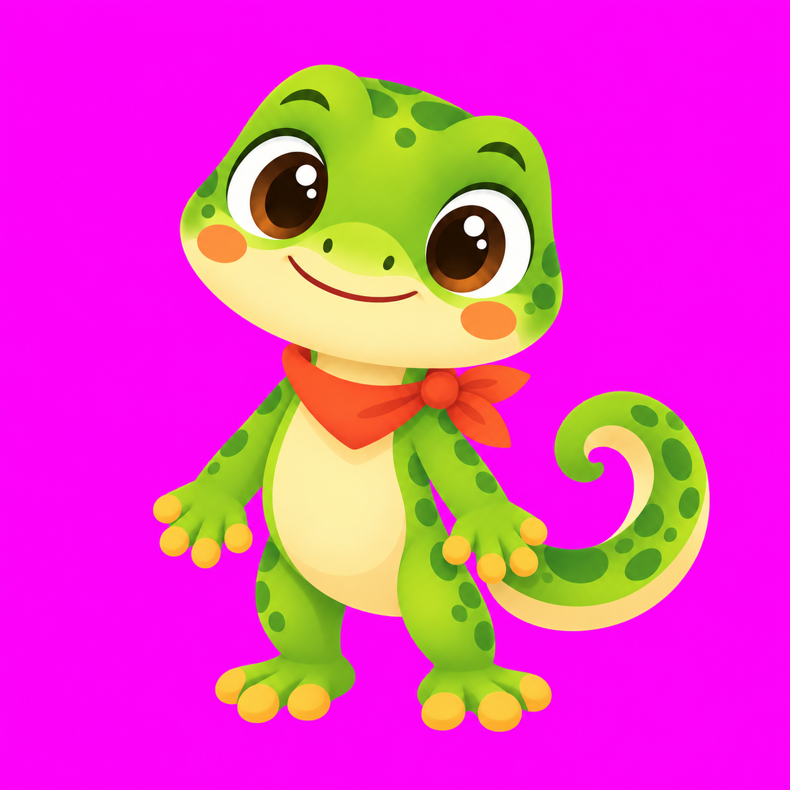
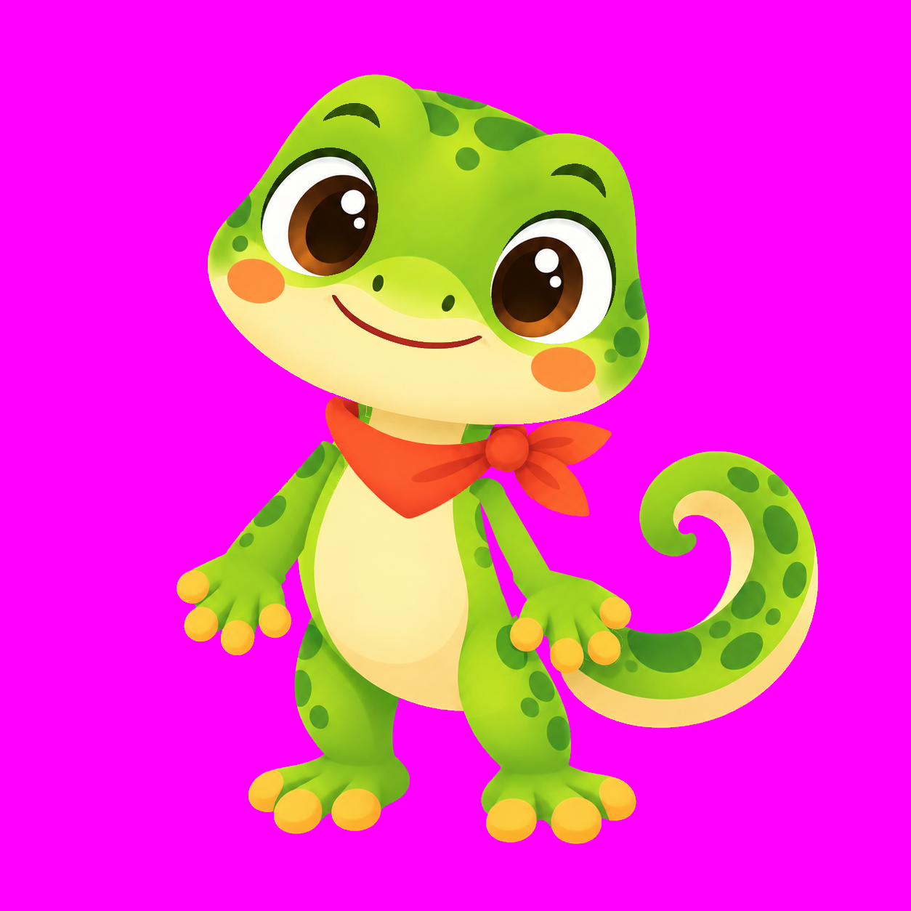
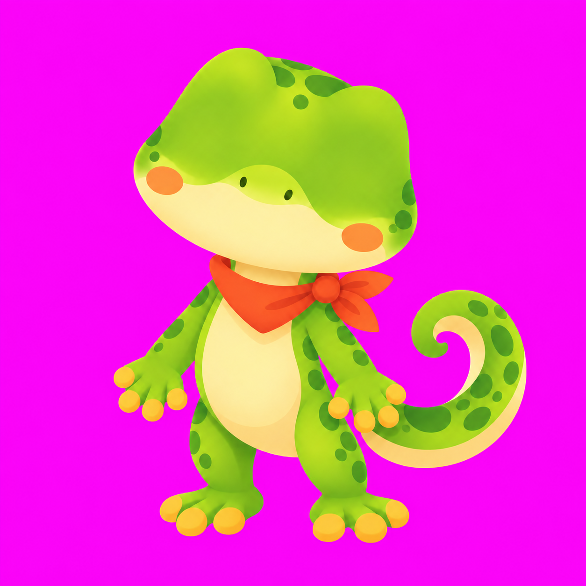
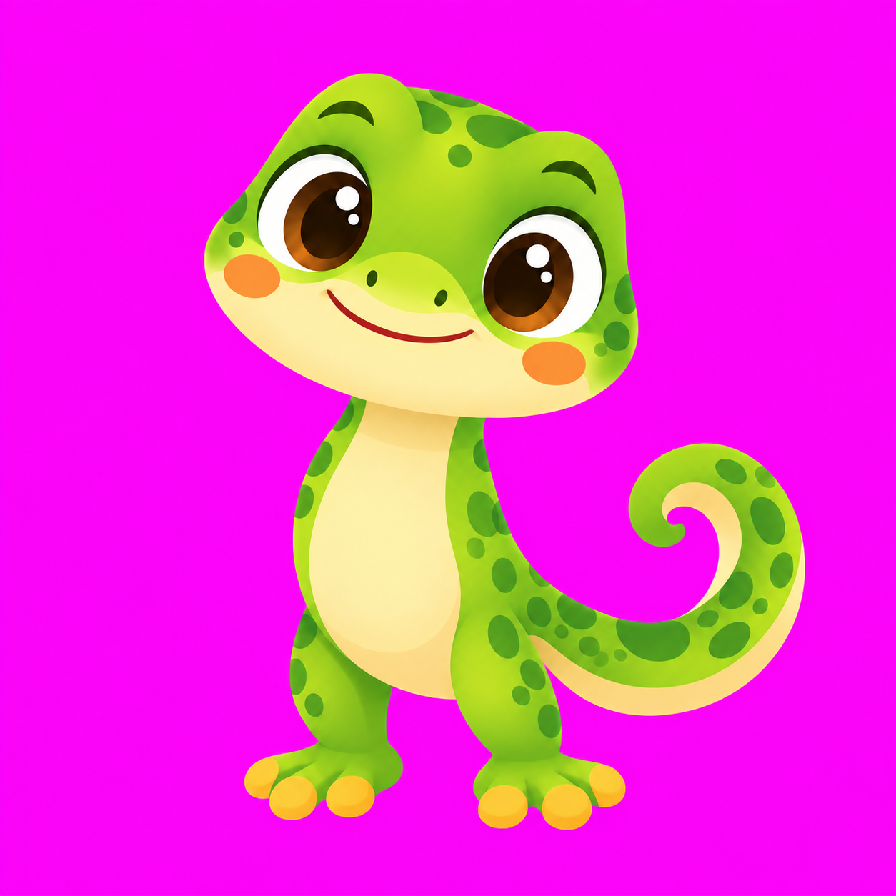

Loading layers…
The underpaintings are edits of the full master. The cutouts preserve its visible artwork. Transparent full-canvas layers are in rig-alpha/; tightly cropped layers plus manifest offsets are in rig-cropped/.
All layers share the original 1254 × 1254 master canvas. Move a joint, switch mouths, or overlay the original to inspect alignment. Bounds and pivots · Build notes
Loading layers…
The underpaintings are edits of the full master. The cutouts preserve its visible artwork. Transparent full-canvas layers are in rig-alpha/; tightly cropped layers plus manifest offsets are in rig-cropped/.



